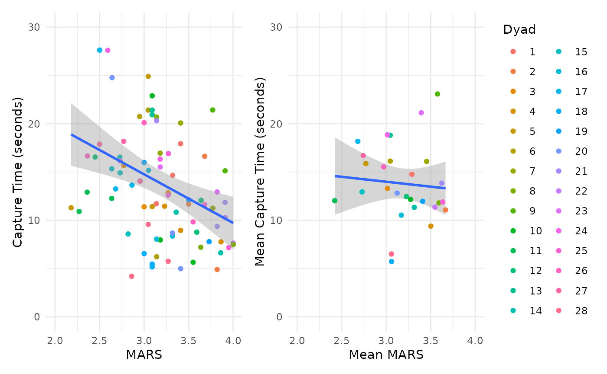
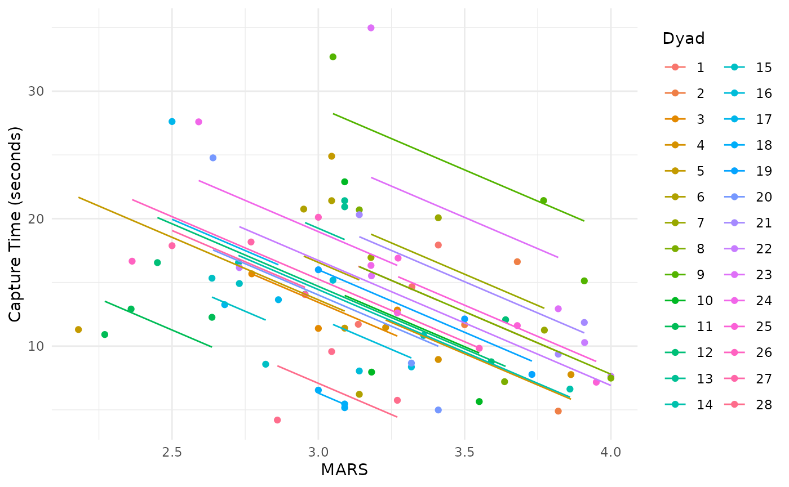
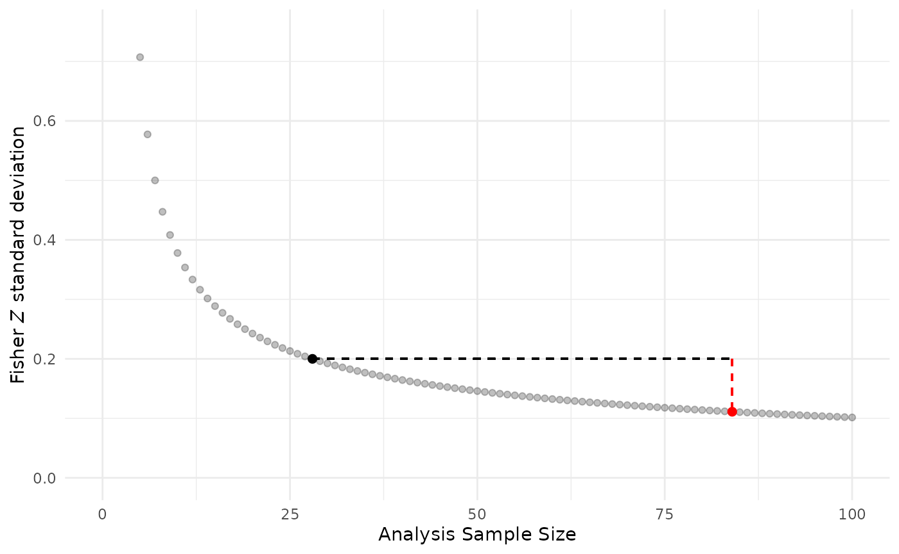

Overfitting/Pseudoreplication
Jonathan Bakdash and Laura Marusich
2024-07-25
Source:vignettes/overfitting.Rmd
overfitting.RmdOverfitting/Pseudoreplication
In this vignette, we demonstrate the potential consequences of a statistical analysis that ignores dependencies in data. Such overfitting may produce misestimated effect sizes with suppressed variability leading to underestimated p-values. This phenomenon is also widely referred to as pseudoreplication (Hurlbert 1984; Lazic 2010; Eisner 2021) or a “unit of analysis error” (Hurlbert 2009). For an accessible introduction to this topic see Reinhart (2015)
This is a simplified illustration of the consequences for overfitting/pseudoreplication, it is not comprehensive. Overfitting is not limited to simple regression/correlation and there are multiple types of pseudoreplication including data collected over space and time (Hurlbert 1984, 2009).
Running Code Below Requires: dplyr, esc, and patchwork
install.packages("dplyr")
require(dplyr)
install.packages("esc")
require(esc)
install.packages("patchwork")
require(patchwork)Example of Overfitting
We illustrate the consequences of overfitting/pseudoreplication using our data from Marusich et al. (2016). This dataset has a sample size of N = 28 dyads (two participants working together), where each dyad has k = 3 repeated measures of two variables: a total of 84 paired observations (N x k). The two measured variables were scores on the Mission Awareness Rating Scale (MARS) and target-capture time, both assessed in three separate experimental blocks.
Repeated measures correlation is a technique for assessing the within-subject (in this example, within-dyad) relationship between two variables; for example, does a dyad tend to demonstrate higher awareness scores in blocks where it also generates faster target-capture times? Sometimes, however, the relevant research question is about between-subject (dyad) associations; for example, do dyads who tend to perform better on one variable also tend to perform better on the other? To answer this second question, it may be tempting to treat the repeated measures data as independent. Below we demonstrate the potential consequences of this approach.
In the left figure, we fit a simple regression/correlation improperly treating the 84 total observations as independent units of analysis. In the right figure, we demonstrate one approach to analyzing the between (dyad) relationship without overfitting: averaging the data by the unit of analysis (dyad). Note this approach removes all within (dyad) information.
The x-axis depicts scores on the Mission Awareness Rating Scale (MARS), with higher values representing better situation awareness. The y-axis is target-capture times, the time in seconds to capture High Value Targets (HVT) during the task. Smaller values (faster times) represent better task performance. The band around each regression line is a 95% confidence interval.
overfit.plot <-
ggplot(data = marusich2016_exp2, aes(x = MARS, y = HVT_capture)) +
geom_point(aes(colour = factor(Pair))) +
geom_smooth(method= "lm", level = 0.95) +
coord_cartesian(xlim = c(2,4), ylim=c(0,30)) +
ylab("Capture Time (seconds)") +
theme_minimal() +
theme(legend.position="none")
marusich2016_avg <- marusich2016_exp2 %>%
group_by(Pair) %>%
summarize(Mean_MARS = mean(MARS),
Mean_HVT_capture = mean(HVT_capture))
average.plot <-
ggplot(data = marusich2016_avg,
aes(x = Mean_MARS, y = Mean_HVT_capture)) +
geom_smooth(fullrange = TRUE, method= "lm", level = 0.95) +
coord_cartesian(xlim = c(2,4), ylim=c(0,30)) +
geom_point(aes(colour = factor(Pair))) +
xlab("Mean MARS") +
ylab("Mean Capture Time (seconds)") +
scale_colour_discrete(name = "Dyad") +
theme_minimal()
overfit.cor <- cor.test(marusich2016_exp2$MARS, marusich2016_exp2$HVT_capture)
average.cor <- cor.test(marusich2016_avg$Mean_MARS, marusich2016_avg$Mean_HVT_capture)
df.s <- rbind(overfit.cor$parameter, average.cor$parameter)
r.s <- rbind(round(rbind(overfit.cor$estimate, average.cor$estimate), digits = 2))
CI.s <- formatC(rbind(overfit.cor$conf.int,
average.cor$conf.int), digits = 2,
format = 'f')
p.vals <- rbind(round(overfit.cor$p.value, digits = 3),
prettyNum(average.cor$p.value, digits = 2,
drop0trailing = TRUE))
overfit.plot + average.plot
#> `geom_smooth()` using formula = 'y ~ x'
#> `geom_smooth()` using formula = 'y ~ x'
The inferential statistics for the above plots are:
Overfit (left): r(82) = -0.35, 95% CI [-0.53, -0.15], p = 0.001 (Exact p-value = 0.0010208)
Average (right): r(26) = -0.09, 95% CI [-0.44, 0.30], p = 0.67 (Exact p-value = 0.6663228)
For the overfit results, note the Pearson correlation has 82 degrees of freedom which is excessive because it implies a sample size of N = 84 dyads (N - 2 degrees of freedom for a correlation (Cohen et al. 2013)). That is, the actual sample size (N = 28 dyads) is erroneously modeled as 84 independent units by ignoring the three paired, repeated measures per dyad.
These two analyses produce varied results. The overfit model erroneously produces a precise moderate, negative correlation for higher MARS values being associated with lower times to capture targets (better performance). In contrast, the average model indicates a weak negative correlation with high uncertainty between dyads.
Comparison to rmcorr
As a comparison, we show the results of conducting a repeated measures correlation analysis on the same dataset. As described above, this method addresses a different question of the nature of the within-dyad relationship, rather than between dyads. In this analysis, averaging is not required, as the dependencies in the data are taken into account.
marusich.rmc <- rmcorr(participant = Pair,
measure1 = MARS,
measure2 = HVT_capture,
data = marusich2016_exp2)
#> Warning in rmcorr(participant = Pair, measure1 = MARS, measure2 = HVT_capture,
#> : 'Pair' coerced into a factor
rmc.plot <-
ggplot(data = marusich2016_exp2,
aes(x = MARS, y = HVT_capture, group = factor(Pair), color = factor(Pair))) +
geom_point(aes(colour = factor(Pair))) +
geom_line(aes(y = marusich.rmc$model$fitted.values)) +
theme_minimal() +
scale_colour_discrete(name = "Dyad") +
ylab("Capture Time (seconds)")
rmc.r <- round(marusich.rmc$r, 2)
rmc.CI <- round(marusich.rmc$CI, 2)
rmc.p <- formatC(marusich.rmc$p, format = "fg", digits = 2)
# prettyNum(average.cor$p.value, digits = 2,
# drop0trailing = TRUE))
rmc.plot
The inferential statistics for the rmcorr analysis are:
rrmcorr(55) = -0.59, 95% CI [-0.74, -0.39], p = 0.0000014.
Levels of Analysis
The above analysis indicates a strong within-dyad or relative relationship for the two measures. At the within level of analysis, higher values of MARS have a large to very large relative (within-dyad) association with better performance, lower target capture times; and vice-versa. However, the dyad-to-dyad comparisons for MARS or performance values are only weakly predictive at the between level of analysis. In other words, using a specific MARS (or performance) value to predict the other is quite limited between the dyads. Results at the between level of analysis may not necessarily generalize to the within level of analysis (Curran and Bauer 2011; Fisher, Medaglia, and Jeronimus 2018; Molenaar and Campbell 2009)
Consequences of Overfitting:
Misestimated effect size: The overfit analysis has an approximately point-estimated medium negative correlation, whereas the averaged analysis has slightly less than a small negative point-estimated correlation.
Spurious precision: The coverage of the confidence intervals (visually on the plot and matching inferential statistics) is narrower than it should be for the overfit analysis compared to the averaged data.
Suppressed p-value: Because overfitting produces a medium negative effect size and underestimates variance, the overfit example is highly statistically significant.
Spurious Precision: Underestimation of Variability
To compare the suppression of variability with the overfit model versus a correct model, we use the Fisher Z approximation for the standard deviation (sd) is: This formula is calculated using the respective sample sizes for each model N = 84 (overfit) and N = 28 (correct).
N.vals <- seq(5, 100, by = 1)
sd.Z <- 1/sqrt(N.vals-3)
sd.overfit <- data.frame(cbind(N.vals, sd.Z))
sd.cor <- sd.Z[N.Marusich2016-4] #Have to subtract 4 because N.vals starts at 5, not 1
sd.overf <- sd.Z[total.obs.Marusich2016-4]
#We could determine the inflated sample size for the overfit model using its degrees of freedom + 2
df.s + 2 == total.obs.Marusich2016
#> df
#> [1,] TRUE
#> [2,] FALSE
sd.overfit.plot <-
ggplot(data = sd.overfit,
aes(x = N.vals, y = sd.Z)) +
coord_cartesian(xlim = c(0,100), ylim=c(0, 0.75)) +
geom_point(alpha = 0.25) +
geom_segment(x = 28, y = sd.cor, xend = 84,
yend = sd.cor, linetype = 2) +
geom_segment(x = 84, y = sd.cor, xend = 84,
yend = sd.overf, colour = "red",
linetype = 2) +
xlab("Analysis Sample Size") +
ylab(expression(paste("Fisher ", italic("Z"), " standard deviation"))) +
annotate(geom = "point", x = 28, y = sd.cor,
colour = "black", size = 2) +
annotate(geom = "point", x = 84, y = sd.overf,
colour = "red", size = 2) +
theme_minimal()
sd.overfit.plot
In the graph, the red dot indicates the overfit model and black dot shows a correct model with averaged data. Note the magnitude of sd underestimation with pseudoreplication is depicted by the dashed vertical red line: the Fisher Z sd = 0.11 for the overfit model is about half the value of a correct model Fisher Z sd = 0.20.
Detecting Overfitting
The easiest way to detect overfitting is comparing the the sample size (degrees of freedom) in statistical results to the actual sample size, as shown above.
However, if degrees of freedom for reported results are unavailable it may still be possible to detect overfitting. For example, the actual sample size N and reported (ideally exact) p-value can be used to calculate their corresponding expected effect size. Then, the expected effect and reported effect can be compared.
We demonstrate this using the esc package (Lüdecke 2019) to determine the expected correlation (Fisher Z) for an actual sample size of N = 28 with a reported p-value (exact) = 0.0010208 from the overfit analysis. We perform the Fisher Z-to-r transformation, using the psych package (William Revelle 2024), to compare the values of the expected correlation versus the reported correlation.
#Calculate the expected correlation using the reported p-value and actual sample size
#esc_t assumes p-value is two-tailed and uses a Fisher Z transformation
calc.z <- esc_t(p = as.numeric(p.vals[1]),
totaln = N.Marusich2016,
es.type = "r")$es
reported.r = as.numeric(r.s[1])
#Overfit?
fisherz2r(calc.z) != abs(reported.r)
#> [1] TRUE
#Note calc.z will always be positive using esc_t() this way
#If the reported.r is not a Fisher Z value - either it should be transformed or the calc.z should be transformed
fisherz2r(calc.z)
#> [1] 0.5284473
reported.r
#> [1] -0.35See the last code chunk in this R Markdown document for examples of detecting overfit correlations from results reported in published papers (https://osf.io/cnfjt) from a systematic review and meta-analysis (Bakdash et al. 2022).
Caveats
Detection of overfitting should be used with caution because mismatches in reported versus expected values could be due to missing or excluded data in the reported statistics. Missing data can produce a lower sample size (based on the reported statistics) than the actual sample size; as opposed to an inflated sample size with true pseudoreplication.
Additionally, overfit models can be adjusted or penalized to account for dependencies in data. Examples of such techniques include cluster-robust errors, regularization, and ensemble models.
Last, we contend there may be some circumstances where overfitting is acceptable (e.g., exploratory data analysis including visualization, separate models for each participant with a large number of repeated trials [such as psychophysics], or no meaningful difference between the overfit model without and with adjustment techniques).
Prevelance of Pseudoreplication
The prevalence of overfitting/pseudoreplication in published papers suggest it is a frequent statistical error across disciplines. For results reported in a single issue of the journal Nature Neuroscience 36% of papers had one or more results with suspected overfitting and 12% of papers had definitive evidence of pseudoreplication (Lazic 2010). In human factors, using only results meeting inclusion for a systematic review, overfitting was found in 28% of papers: 29 out of 1031(Bakdash et al. 2022).